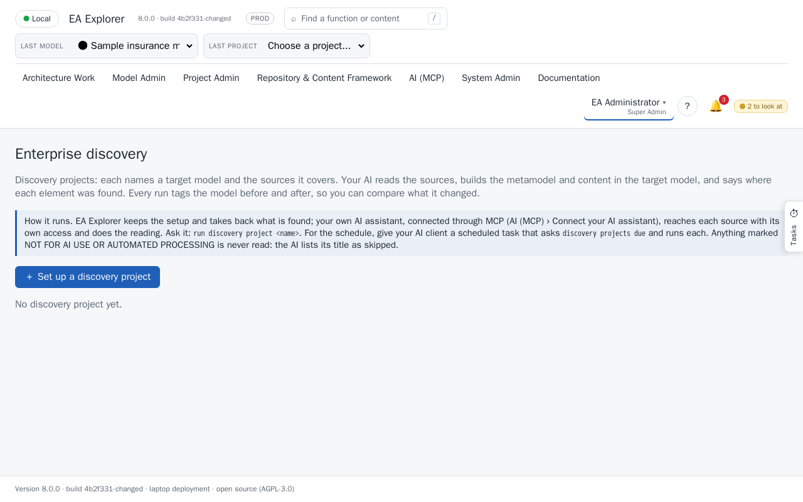

Discover the enterprise with AI
For: Practising architects, Developers
Your AI assistant reads your sources and proposes what it finds for a model.

#/discovery-projectsWhy do this
Much architecture knowledge is buried in documents: designs, contracts, policies. Discovery has your AI assistant read the sources you choose and propose entities and relationships, each with where it was found, for a person to accept or reject. See AI in EA Explorer.
Using AI in EA Explorer is always your assistant working with your rights: it reads and drafts, you review and commit. Used well, it takes the slow parts of architecture work (searching, cross-checking, first drafts) so you spend your time on judgement.
In TOGAF terms: Outside the standard's method, but in service of it: AI speeds up gathering content (phases B to D), analysis (E) and reporting to stakeholders, with people reviewing every change. See EA Explorer and the TOGAF Standard.
The goal: The AI reads your documents and proposes what it finds for the model.
Before you start A Discovery Admin has set up a discovery project (AI (MCP) › Enterprise discovery) with its target model and sources.
Steps
- Ask your AI assistant to run the discovery project.
- It reads the sources (mailboxes, folders, SharePoint, Git, wikis, ticket systems, database schemas and more) and proposes the elements and relationships it finds, each with where it was found.
- What it proposes is reviewed like any change. Documents marked NOT FOR AI USE are never read.